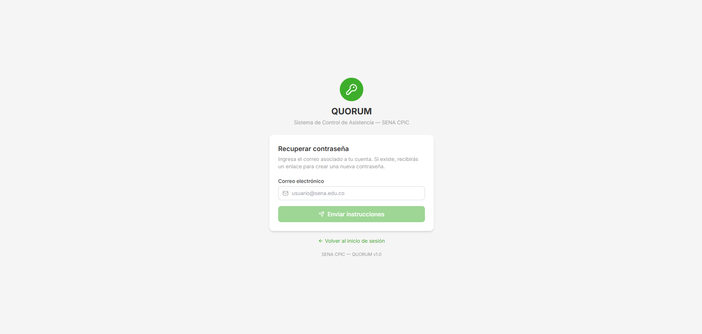
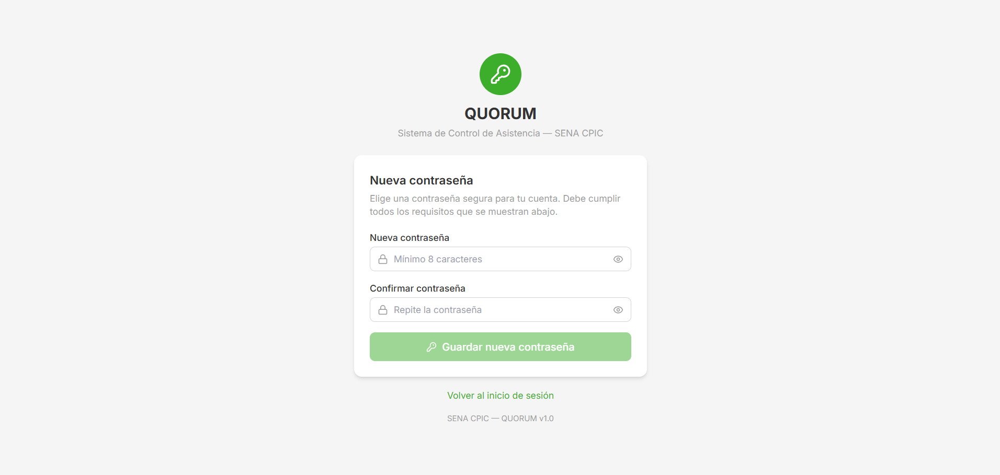
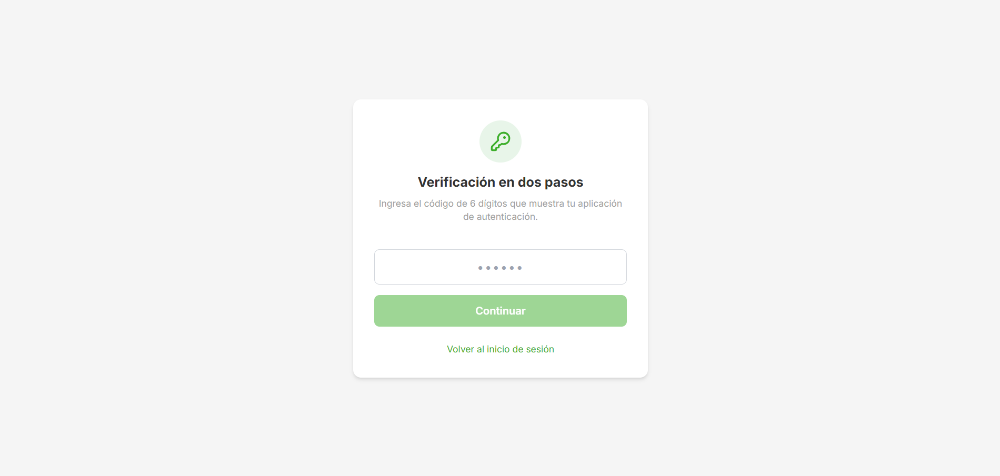
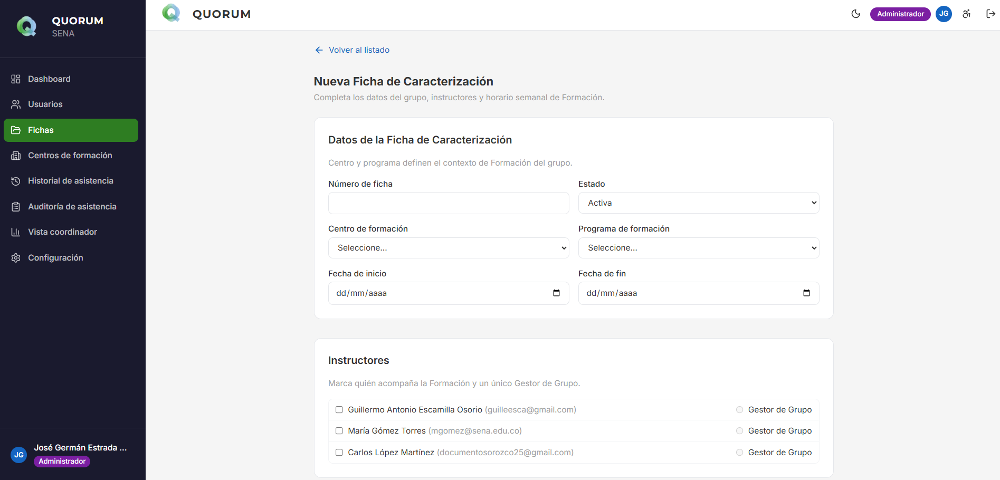
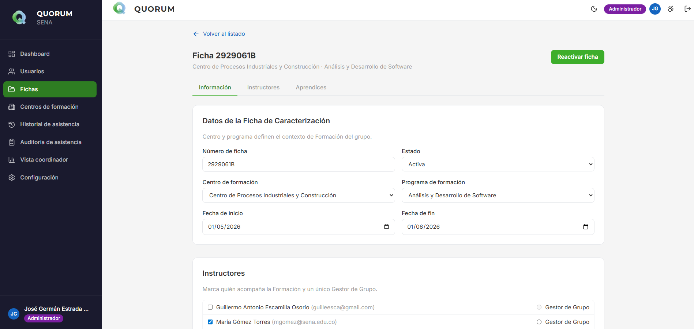
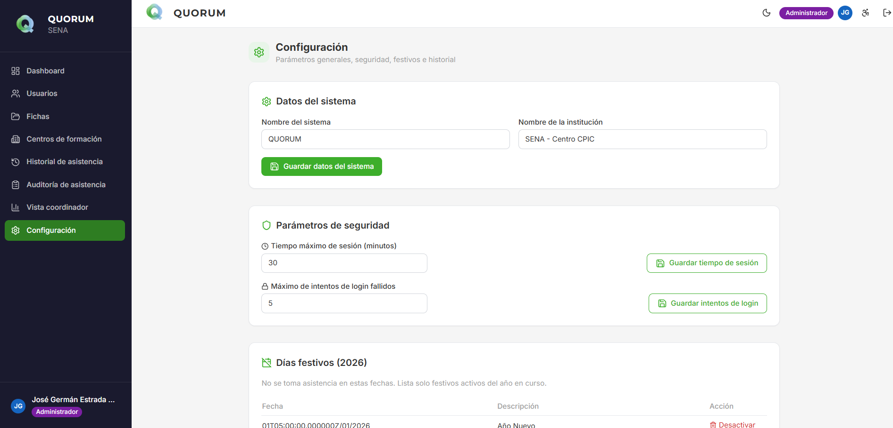
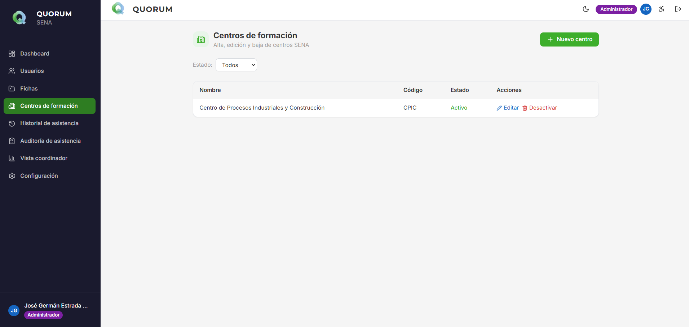
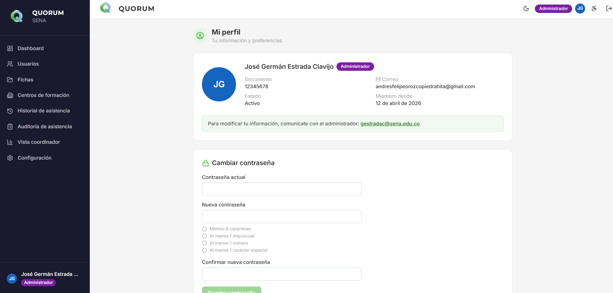

Manual de usuario e instalación
QUORUM — Sistema de control de asistencia (SENA CPIC). Este documento se basa en el comportamiento real del repositorio: Next.js (frontend), Laravel (API) y MySQL.
Introducción
QUORUM digitaliza el registro y seguimiento de asistencia de aprendices vinculado a fichas de caracterización. Sustituye controles dispersos en papel o hojas de cálculo sueltas por una base centralizada, con roles (administrador, coordinador, instructor, gestor de grupo, aprendiz) y reglas aplicadas en el servidor (Laravel Sanctum, políticas y middleware).
Qué automatiza o facilita en la práctica:
- Autenticación de personal con reCAPTCHA, sesión stateful y 2FA TOTP cuando aplica.
- Acceso de aprendices con correo y documento, sin contraseña.
- Gestión de fichas, instructores, aprendices e importación desde Excel.
- Sesiones de asistencia, guardado y ajuste de registros según permisos.
- Historial / matriz por ficha y panel de coordinación.
- Generación de reporte Excel CPIC a partir de plantilla institucional.
- Configuración, días festivos, centros de formación y auditoría (según rol).
Requisitos del entorno
Según el README del proyecto:
- XAMPP (o entorno equivalente) con PHP 8.2 y MySQL activos.
- Node.js 20+ y npm.
- Composer 2.x.
- Navegador actualizado (Chrome, Edge o Firefox recomendados).
El backend debe poder enviar correo (SMTP) para recuperación de contraseña y, en su
caso, otras notificaciones. Configura MAIL_* en el .env del
backend. reCAPTCHA y claves deben coincidir entre backend y frontend según tu
despliegue (.env.example en quorum-backend).
Instalación y ejecución
Las rutas siguientes asumen que el repositorio contiene las carpetas
quorum-backend y quorum-frontend al mismo nivel (como en
QUORUM_PROYECTO). Ajusta las rutas si tu copia está en otro directorio.
1. Base de datos
- Inicia MySQL en XAMPP (o tu servicio MySQL).
- Crea una base de datos llamada
quorum(o el nombre que definas en.env).
2. Backend (Laravel)
cd quorum-backend
copy .env.example .env
composer install
php artisan key:generate
php artisan migrate --seed
php artisan serveLa API queda habitualmente en http://localhost:8000. Comprueba el estado con:
GET http://localhost:8000/api/pingDebe responder JSON con status: ok.
3. Plantilla Excel CPIC (obligatoria para el reporte)
El servicio de reportes espera el archivo
storage/app/plantilla_asistencia.xlsx en el backend
(ReporteExcelService). Si falta, la descarga del Excel puede fallar con un
error indicando que no se encontró la plantilla. Coloca ahí la plantilla oficial que
use tu centro.
4. Frontend (Next.js)
cd quorum-frontend
npm install
Crea .env.local en quorum-frontend con al menos:
NEXT_PUBLIC_API_URL=http://localhost:8000
El .env del backend debe alinear FRONTEND_URL,
SESSION_DOMAIN y SANCTUM_STATEFUL_DOMAINS con el host y
puerto donde corre Next (por defecto http://localhost:3000). Ver
comentarios en quorum-backend/.env.example.
npm run devAbre la URL que muestre la consola (típicamente http://localhost:3000).
5. Orden de arranque recomendado
- MySQL
php artisan servenpm run deven el frontend
6. Usuarios de prueba
Tras migrate --seed, los usuarios vienen de
database/seeders/UsuarioSeeder.php. La contraseña de staff documentada en el
README del proyecto es Admin123! (verifica en el seeder si cambió). Los
aprendices inician sesión con correo + número de documento, sin contraseña.
Primer acceso y seguridad
-
Staff (admin, coordinador, instructor, gestor): en
/login, pestaña de instructor/admin, correo y contraseña, completar reCAPTCHA y enviar. Luego puede solicitarse configuración o verificación 2FA (/2fa/configurar,/2fa/verificar) según el flujo del sistema. - Aprendiz: en la misma página, pestaña de aprendiz: correo institucional y documento; reCAPTCHA. No usa contraseña.
-
Recuperación de contraseña (staff):
/recuperarsolicita enlace por correo;/resetaplica el nuevo secreto con token válido (endpointsPOST /api/auth/recuperaryPOST /api/auth/reset). - Cuenta inactiva o sin permiso: el backend debe responder con mensajes o redirecciones acordes a las políticas (p. ej. 403 en rutas no autorizadas).
La mayoría de rutas de panel exigen sesión Sanctum y, para staff, sesión con 2FA
completada (EnsureTotpSessionOk en api.php). Excepciones
explícitas en código: GET /api/mi-historial (aprendiz) y
PATCH /api/perfil/contrasena sin ese middleware de TOTP.
Rutas de la aplicación (Next.js)
Pantallas implementadas bajo quorum-frontend/app/:
| Ruta | Descripción breve |
|---|---|
/ |
Redirige (p. ej. a login). |
/login |
Login staff y aprendiz, reCAPTCHA, tema claro/oscuro. |
/recuperar, /reset |
Recuperación de contraseña. |
/2fa/configurar, /2fa/verificar |
Configuración y verificación 2FA TOTP. |
/dashboard |
Panel principal por rol. |
/fichas, /fichas/nueva, /fichas/[id] |
Listado, creación y detalle/gestión de ficha (admin). |
/usuarios |
Gestión de usuarios con modal crear/editar (admin). |
/asistencia/tomar |
Tomar asistencia (instructor / gestor). |
/asistencia/historial |
Historial / matriz por ficha (roles con permiso). |
/asistencia/auditoria |
Auditoría de asistencia (admin). |
/coordinador |
Panel coordinador (admin y coordinador en API). |
/mi-historial |
Historial propio del aprendiz. |
/configuracion |
Configuración del sistema y días festivos (admin). |
/centros-formacion |
Administración de centros (admin). |
/perfil |
Perfil y cambio de contraseña. |
Guía por pantalla
Sustituye los recuadros grises por capturas (ver LEEME.txt). Los pasos son
orientativos; la UI puede variar levemente entre versiones.
Inicio de sesión — /login

/login (staff y aprendiz).- Abre la URL del frontend.
- Elige pestaña Staff o Aprendiz.
- Completa campos y reCAPTCHA; envía el formulario.
Recuperar y restablecer

/recuperar.
/reset.Desde /recuperar ingresa el correo; usa el enlace del correo para llegar a /reset.
2FA
Captura de configuración 2FA (04-2fa-configurar.png): pendiente cuando la agregues en
assets/screenshots/.

/2fa/verificar.Dashboard

/dashboard.Punto de entrada al resto de módulos según tu rol y menú lateral.
Fichas

/fichas.
/fichas/nueva.
/fichas/[id].Crea fichas, asigna instructores, gestiona aprendices e importación Excel desde el detalle.
Usuarios

/usuarios.Listado, filtros, alta/edición en modal, baja o reactivación según políticas.
Asistencia
Pantalla Tomar asistencia (/asistencia/tomar): agrega
assets/screenshots/11-asistencia-tomar.png para mostrarla aquí.

/asistencia/historial.Inicia o continúa sesión en /asistencia/tomar, marca tipos de asistencia y guarda. El historial muestra la matriz por ficha.
Auditoría y coordinador
Pantalla Auditoría de asistencia (/asistencia/auditoria): agrega
13-auditoria.png en assets/screenshots/.

/coordinador.Aprendiz — Mi historial

/mi-historial.Configuración y centros

/configuracion.
/centros-formacion.Perfil

/perfil.Operación por rol (resumen)
| Rol | Acciones típicas en la app |
|---|---|
| Administrador | Usuarios, fichas, centros, configuración, festivos, auditoría, todo lo que la API expone bajo políticas admin. |
| Coordinador | Consulta amplia: panel coordinador, fichas/asistencias según endpoints /api/coordinador/*; sin mutaciones que el API reserve solo a admin. |
| Instructor / Gestor de grupo | Tomar asistencia en sesiones permitidas, ver historial de fichas autorizadas, descargar Excel de ficha si la política lo permite. |
| Aprendiz | Solo consulta de su historial (/mi-historial, GET /api/mi-historial). |
La autorización definitiva está en Laravel (policies, middleware); la UI solo refleja lo permitido.
CRUD y entidades principales
| Entidad / área | UI | Notas |
|---|---|---|
| Usuarios | /usuarios |
CRUD vía API /api/usuarios (admin). Reactivación en ruta dedicada. |
| Fichas | /fichas* |
Alta, edición, baja lógica, reactivar; asignación instructores; aprendices e importación. |
| Asistencia | /asistencia/tomar |
Iniciar sesión, guardar sesión, actualizar registro puntual. |
| Centros de formación | /centros-formacion |
CRUD bajo prefijo /api/admin/centros-formacion (admin). |
| Días festivos | /configuracion |
CRUD /api/dias-festivos* (admin). |
| Configuración | /configuracion |
Lectura/actualización GET/PATCH /api/configuracion (admin). |
| Reporte Excel | Desde flujos de ficha / historial (botón según UI) | GET /api/reportes/excel/{ficha}; requiere plantilla en storage. |
Tipos de asistencia (colores en UI)
Códigos de color alineados al diseño del proyecto:
Presente Falla Parcial Excusa
API REST (resumen por grupos)
Definido en quorum-backend/routes/api.php:
- Público / auth:
GET /api/ping;POST .../auth/login,login-aprendiz,recuperar,reset; con sesión:logout,me, 2FA. - Con Sanctum + TOTP OK: dashboard, usuarios, fichas y aprendices, asistencia (iniciar, guardar, actualizar registro), historial por ficha, Excel, coordinador, configuración y festivos, historial de actividad, admin centros, auditoría.
- Aprendiz:
GET /api/mi-historial(sin middleware TOTP de sesión completa). - Perfil:
PATCH /api/perfil/contrasena(sin ese middleware TOTP).
Diccionario de datos (tablas principales)
Derivado de migraciones en quorum-backend/database/migrations/:
| Tabla | Descripción |
|---|---|
centros_formacion |
Centros SENA vinculados al sistema. |
programas_formacion |
Programas asociados a fichas. |
usuarios |
Todos los actores: staff y aprendices; rol, estado, datos de contacto y documento. |
fichas_caracterizacion |
Fichas de caracterización; metadatos de formación y estado. |
jornadas_ficha, horarios |
Jornada y franjas horarias por ficha. |
ficha_instructor |
Asignación de instructores/gestores a ficha. |
sesiones |
Sesiones de toma de asistencia. |
registros_asistencia |
Registro por aprendiz y sesión (tipo, horas parciales, etc.). |
registros_asistencia_backup |
Respaldo / espejo para integridad histórica. |
dias_festivos |
Calendario de festivos para cómputo de días hábiles. |
tokens_reset |
Tokens de recuperación de contraseña. |
intentos_login |
Control de intentos fallidos de login. |
importaciones_aprendices |
Trazabilidad de importaciones desde Excel. |
historial_actividad |
Registro de acciones relevantes para auditoría. |
configuracion |
Parámetros globales del sistema. |
personal_access_tokens |
Tokens Sanctum (técnico). |
Glosario (terminología institucional)
- Aprendiz: persona en formación en el SENA (no “estudiante” ni “alumno”).
- Instructor: quien imparte formación (no “profesor” en la interfaz).
- Formación: actividad académica/técnica (no “clase” genérica).
- Ambiente de formación: espacio físico o virtual donde ocurre la formación.
- Ficha de caracterización / Ficha: grupo identificado por número de ficha.
Bibliografía y webgrafía
- PRD_QUORUM_v1.0.md (repositorio del proyecto).
- README.md del proyecto QUORUM.
- Documentación Laravel: https://laravel.com/docs
- Documentación Next.js: https://nextjs.org/docs
- SENA Colombia — portal institucional: https://www.sena.edu.co
Problemas frecuentes
- El front no guarda sesión o hay errores CORS/cookies: revisa
FRONTEND_URL,SESSION_DOMAINySANCTUM_STATEFUL_DOMAINSen el.envdel backend frente al origen real del navegador (puerto incluido). - API no responde: MySQL caído,
php artisan serveno iniciado o puerto ocupado. - Excel no descarga: falta
storage/app/plantilla_asistencia.xlsxo permisos de lectura en el servidor. - reCAPTCHA falla: claves de sitio y secreto coherentes entre
.envbackend y variable pública del frontend. - Correo de recuperación no llega: SMTP (
MAIL_*) y carpeta de spam.
Conclusiones
QUORUM concentra en una sola aplicación web el registro de asistencia, la trazabilidad por
ficha y roles, y la salida a formato Excel institucional, reduciendo retrabajo y dispersión
de datos. Este manual se apoya en el código vigente del repositorio; ante actualizaciones,
contrasta siempre rutas en app/ y routes/api.php.
Checklist primer día: BD creada, migraciones y seed, plantilla Excel en storage/app/, .env backend y .env.local front, ping OK, login de prueba staff y aprendiz.